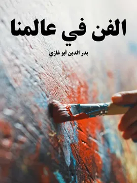

الفن في عالمنا

قراءة عربية أصلية محددة النطاق في الصفحات 9، 10 من ملف PDF المرتبط، وليست تلخيصا كاملا للكتاب. نناقش ما تدعمه هذه المقاطع فقط.
الفنان بين الكنيسة والقصر والجماهير
يتتبع أبو غازي في الفصل الأول تحولات مكانة الفنان: كان الفنان قديمًا يعيش تحت قباب الكنائس أو في ظل القصور مرسلًا من قلاعها بريقه الذهبي، فلما ضعف سلطان الكنيسة وانهارت قلاع القصور بدأ يواجه الحياة ويعيد النظر في صلاته بالمجتمع، وتحول برسالته إلى أغراض أخرى تمثلت في رفاهية الرجل المتوسط في الفن الهولندي والفن الإنجليزي، وتزيين المباهج الأرستقراطية في الفن الفرنسي، وخدمة النظام السياسي في البلاد النازية والشيوعية. غير أن تقلبات الحياة السياسية والاجتماعية أخذت تلاحق الفنان وتهز مكانه في المجتمع؛ فقد توارت البورجوازية وظهرت الجماهير في الأفق كقوة أساسية على الفنان أن يدخلها في حسابه، كما أن تسخير الفن لخدمة النظام السياسي يهدده بالضعف والانحدار، وأوضح دليل على ذلك الفن في ألمانيا على عهد هتلر والفن في بعض الدول الشيوعية. فكيف يستطيع الفنان إذن أن يرتبط بعصره ويؤثر فيه؟
زاوية وحدود القراءة
قراءة في مطلع الفصل الأول «مكانة الفنان في المجتمع المعاصر» من الصفحتين 9 و10. التسلسل التاريخي لمكانة الفنان وأمثلة الفنون الأوروبية من نص الفصل المقروء. بقية فصول الكتاب عن الفن والمجتمع خارج نطاق المقروء.
الطبعة والقراءة
هذه النسخة من الكتاب صادرة ومتاحة مجانًا بموجب اتفاق قانوني بين مؤسسة هنداوي وأسرة السيد الأستاذ بدر الدين أبو غازي.
تنزيل PDF المجاني ↓ القراءة والمصدر الرسمي ↗